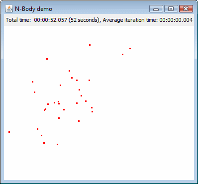

Parallel N-body Sample |
What does the sample do?
This sample is a parallel implementation of the N-body problem for simulating the motion of anti-protons trapped in a magnetic field.
It displays a real-time graphical simulation of the movement of the anti-protons, based on the parameters specified in the configuration file.
The source in this sample is based on the examples provided in the Java Parallel Library.
Here's a screenshot of the simulation in action:

How do I run it?
Before running this sample application, you need to install a JPPF server and at least one node.For information on how to set up a node and server, please refer to the JPPF documentation.
Once you have installed a server and node, perform the following steps:
- open a command prompt in JPPF-x.y-samples-pack/Nbody
- to build the sample: type "ant compile" or simply "ant"; this will compile all source files in the sample
- to run the simulation, you can either use the batch script "run.bat" (on Windows) or "run.sh" (on Linux), or the Ant script: "ant run"
You might also want to play with the simulation parameters to see how they impact the motion of the simulated antiprotons. They are specified in the configuration file config/jppf.properties as follows:
# charge on an antiproton nbody.qp = 6 # magnetic field strength nbody.b = 0.42 # simulation radius (size of the graphical panel) nbody.radius = 300 # granularity of the time steps nbody.dt = 0.01 # number of bodies (anti protons) nbody.n = 100 # number of time steps nbody.time.steps = 13000 # How many bodies (anti protons) per JPPF task nbody.bodies.per.task = 25
I have additional questions and comments, where can I go?
If you need more insight into the code of this demo, you can consult the Java source files located in the CustomMBeans/src folder.
In addition, There are 2 privileged places you can go to:
- The JPPF Forums
- The JPPF documentation
| Copyright © 2005-2013 JPPF.org |
|
|